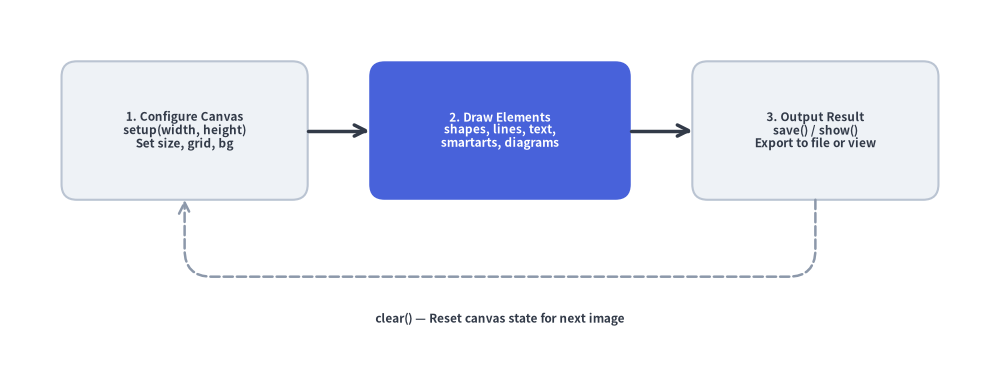
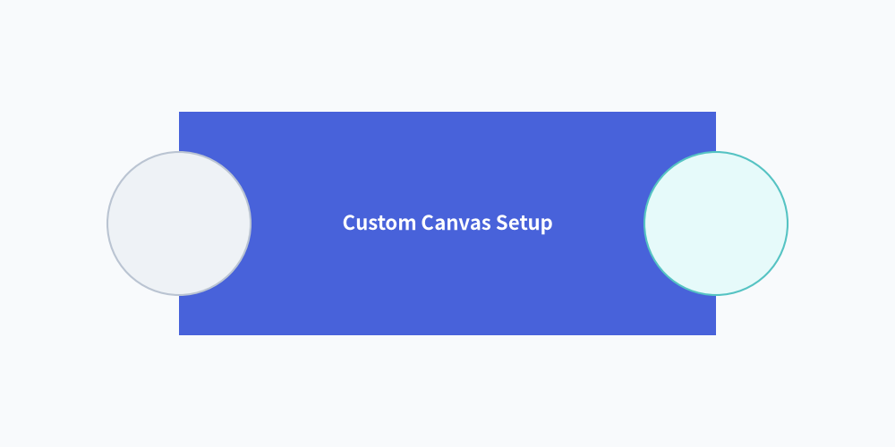
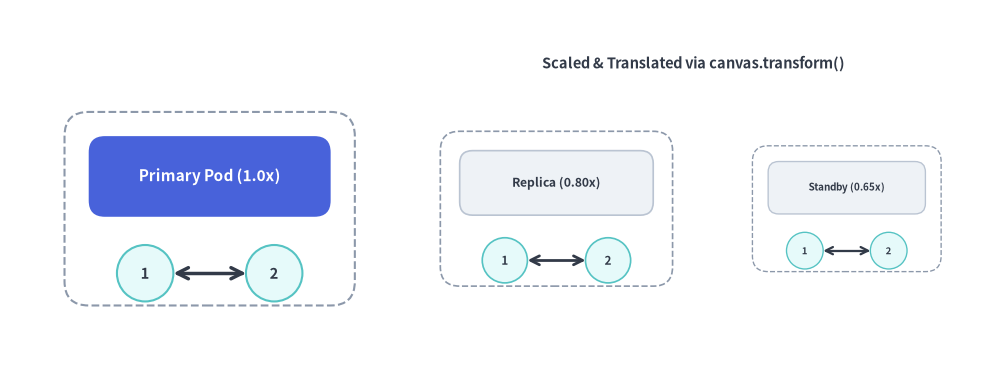

Canvas & Coordinates
The canvas is the foundational drawing surface of Drawlib.
Under the "Illustration as Code" paradigm, canvas dimensions, resolution, background coloring, coordinate grids, and export formats are managed entirely through declarative Python function calls.
Drawlib maintains an active canvas singleton where drawing functions register visual elements before the canvas is saved or rendered:

Source Code
from drawlib.canvas import save, setup
from drawlib.icons import phosphor
from drawlib.lines import lines_curved
from drawlib.smartarts import ChevronProcess
from drawlib.styles import Styles
from drawlib.text import text
setup(width=124, height=44)
# 4-Stage Canvas Lifecycle Pipeline using ChevronProcess
lifecycle = ChevronProcess(
style=Styles.Neutral,
text_style=Styles.DarkBold.patch(text_size=11.0, xy_shift=(0, -2.2)),
description_style=Styles.Dark.patch(text_size=10.0, xy_shift=(0, -2.8)),
corner_angle=65.0,
spacing=1.5,
flat_left_end=True,
)
lifecycle.add("1. Configure", description="setup(w, h)")
lifecycle.add(
"2. Primitives",
description="shapes, lines",
style=Styles.PrimaryFlat,
text_style=Styles.WhiteBold.patch(text_size=11.0, xy_shift=(0, -2.2)),
description_style=Styles.White.patch(text_size=10.0, xy_shift=(0, -2.8)),
)
lifecycle.add("3. Components", description="smartarts, graph", style=Styles.PrimaryNeutral)
lifecycle.add("4. Export", description="save() / show()", style=Styles.SecondaryNeutral)
lifecycle.draw(xy=(4, 15), width=116.0, height=25.0)
# Overlay Phosphor icons at the top center of each chevron stage
stage_icons = [
(17.5, phosphor.sliders_horizontal, Styles.DarkBold),
(46.5, phosphor.shapes, Styles.WhiteBold),
(75.5, phosphor.grid_four, Styles.PrimaryBold),
(104.5, phosphor.floppy_disk, Styles.SecondaryBold),
]
for cx, icon_fn, icon_st in stage_icons:
icon_fn((cx, 34.0), width=5.2, style=icon_st)
# Return loop from Stage 4 back to Stage 1
lines_curved(
[(105, 15), (105, 6.5), (18, 6.5), (18, 15)],
r=3.0,
arrow_head="->",
style=Styles.MutedDashed.patch(line_width=1.8),
)
text(
(61.5, 3.0),
"clear() — Reset canvas state for next illustration",
style=Styles.DarkBold.patch(text_size=10.5),
)
save()
1. Imports & Core Lifecycle
Canvas lifecycle functions and the singleton canvas instance are imported from drawlib.canvas:
from drawlib.canvas import (
canvas, # Active singleton Canvas instance (provides canvas.transform())
clear, # Reset canvas state and configuration between drawings
get_dimage, # Render canvas in-memory and return a Dimage object
save, # Save drawing to disk (PNG, WebP, JPG, SVG, PDF)
setup, # Configure dimensions, grid, background color, and DPI
show, # Display canvas in an interactive GUI window
)
[!IMPORTANT] Sequential Scripts & Multi-Image Generation:
If you generate multiple illustrations in a single Python script, always callclear()between images. Otherwise, elements from earlier drawings will bleed onto subsequent canvases.
2. Cartesian Coordinate Space
Drawlib uses a mathematical Cartesian coordinate system:
- Origin
(0, 0): Fixed at the bottom-left corner of the canvas. - X-Axis: Increases horizontally to the right (
0towidth). - Y-Axis: Increases vertically upwards (
0toheight). - Center-Based Anchoring: Coordinates
(x, y)for shapes, text, and icons refer to their exact geometric center by default.
from drawlib.canvas import save, setup
from drawlib.shapes import circle, rectangle
from drawlib.styles import Colors, Styles
# Custom background color (Muted tone 1) and coordinate grid
setup(width=100, height=50, background_color=Colors.Muted1, grid=True)
rectangle((50, 25), width=60, height=25, style=Styles.PrimaryFlat, text="Custom Canvas Setup", text_style=Styles.WhiteBold.patch(text_size=12.0))
circle((20, 25), radius=8, style=Styles.Neutral)
circle((80, 25), radius=8, style=Styles.SecondaryNeutral)
save()

3. Function & Method Reference
3.1. setup()
Configures canvas geometry, resolution, coordinate grids, and background appearance. Must be called before drawing elements.
setup(
width: int | None = None,
height: int | None = None,
dpi: int | None = None,
color: Color | tuple[int, int, int] | tuple[int, int, int, float] | str | None = None,
alpha: float | None = None,
background_color: Color | tuple[int, int, int] | tuple[int, int, int, float] | str | None = None,
background_alpha: float | None = None,
grid: bool | None = None,
grid_only: bool | None = None,
grid_style: Style | None = None,
grid_centerstyle: Style | None = None,
grid_xpitch: int | None = None,
grid_ypitch: int | None = None,
)
Parameter Reference:
| Parameter | Type | Default | Description |
|---|---|---|---|
width |
int |
100 |
Canvas width in virtual coordinate units (> 0). |
height |
int |
100 |
Canvas height in virtual coordinate units (> 0). |
dpi |
int |
100 |
Dots per inch (resolution and raster sharpness). |
background_color / color |
Color | tuple | str |
(255, 255, 255) |
Canvas background color as a Color instance, RGB/RGBA tuple, hex string ("#f8fafc"), or CSS color name (color is a shorthand alias for background_color). |
background_alpha / alpha |
float |
1.0 |
Background opacity in [0.0, 1.0] (0.0 = fully transparent, 1.0 = opaque; alpha is a shorthand alias for background_alpha). |
grid |
bool |
False |
Overlays coordinate grid lines for layout alignment. |
grid_only |
bool |
False |
Renders the coordinate grid overlay without saving a separate non-grid image. |
grid_style |
Style |
Gray dashed | Custom line style for regular grid lines (automatically enables grid=True). |
grid_centerstyle |
Style |
Bold gray dashed | Custom line style for center axes (x = width / 2, y = height / 2). |
grid_xpitch |
int |
width / 10 |
Spacing between vertical grid lines. |
grid_ypitch |
int |
height / 10 |
Spacing between horizontal grid lines. |
3.2. save()
Exports the active canvas to an image file on disk.
save(
file: str | None = None,
format: Literal["png", "webp", "jpg", "pdf", "svg"] | None = None,
)
file: Target file path. If omitted, defaults to<script_name>.pngin the directory of the running script.format: Output image format ("png","webp","jpg"/"jpeg","svg","pdf"). If omitted, inferred from the filename extension or defaults to"png".- Grid Export Behavior (
setup(..., grid=True)):- When
grid=Trueandgrid_only=False(default), callingsave("out.png")writes two files: the clean illustration (out.png) and a companion grid-overlaid image (out_grid.png). - When
grid_only=True, callingsave("out.png")writes only a single file (out.png) with the coordinate grid overlaid directly on the drawing.
- When
[!NOTE] Handling
save()in Markdown Blocks: In Markdown embedded code blocks (```drawlib), callingsave()is optional because the Document Builder captures the canvas automatically. Ifsave()is called within an embedded block, the engine treats it safely as a no-op to prevent duplicate writes or collisions. However, explicitly includingsave()(without arguments) in complete examples is recommended for 100% copy-paste compatibility with standalone.pyscripts.
3.3. show()
Opens a local interactive desktop window displaying the illustration. In headless environments (CI/CD, Docker, remote servers), use save() or CLI drawlib show -o <path> instead.
3.4. clear()
Resets canvas geometry, clears registered artists, and restores default styles and configuration parameters.
3.5. get_dimage()
Renders the canvas in-memory and returns a Dimage object, allowing programmatic image transformations, cropping, and chaining without writing temporary files to disk.
3.6. Local Coordinate Scaling & Translation (canvas.transform())
The canvas.transform() context manager applies a similarity transformation (proportional scaling around an anchor origin plus an (dx, dy) translation offset) to all shapes, lines, icons, and text drawn within its with block. Transforms can also be nested.
with canvas.transform(
origin: tuple[float, float] = (0.0, 0.0),
scale: float = 1.0,
translate: tuple[float, float] = (0.0, 0.0),
):
...
origin: Anchor coordinate(ox, oy)around which scaling is performed (defaults to(0.0, 0.0)).scale: Positive proportional scale factor (> 0, defaults to1.0). Scales geometry, stroke widths, arrowheads, and font sizes together.translate: Additional(dx, dy)translation offset applied in canvas units (defaults to(0.0, 0.0)).
from drawlib.canvas import canvas, save, setup
from drawlib.lines import line
from drawlib.shapes import circle, rectangle
from drawlib.styles import Styles
from drawlib.text import text
setup(width=124, height=46, grid=True, grid_xpitch=25, grid_ypitch=12)
def draw_service_pod(title: str, is_hero: bool = False) -> None:
"""Reusable pod component authored in local coordinates around (26, 20)."""
card_style = Styles.PrimaryFlat if is_hero else Styles.Neutral
label_style = (Styles.WhiteBold if is_hero else Styles.DarkBold).patch(text_size=11.0)
rectangle((26, 20), width=36, height=24, style=Styles.MutedDashed.patch(shape_r=3))
rectangle((26, 24), width=30, height=10, style=card_style.patch(shape_r=2), text=title, text_style=label_style)
circle((18, 12), radius=3.5, style=Styles.SecondaryNeutral, text="1", text_style=Styles.DarkBold.patch(text_size=10.5))
circle((34, 12), radius=3.5, style=Styles.SecondaryNeutral, text="2", text_style=Styles.DarkBold.patch(text_size=10.5))
line((21.5, 12), (30.5, 12), arrow_head="<->", style=Styles.DarkBold)
# 1. Original 1.0x pod at (26, 20)
draw_service_pod("Primary Pod (1.0x)", is_hero=True)
# 2. Scaled (0.80x) and translated (+43, 0) replica pod
with canvas.transform(origin=(26, 20), scale=0.80, translate=(43, 0)):
draw_service_pod("Replica (0.80x)")
# 3. Scaled (0.65x) and translated (+79, 0) standby pod
with canvas.transform(origin=(26, 20), scale=0.65, translate=(79, 0)):
draw_service_pod("Standby (0.65x)")
text((86, 38), "Scaled & Translated via canvas.transform()", style=Styles.DarkBold.patch(text_size=10.5))
save()
